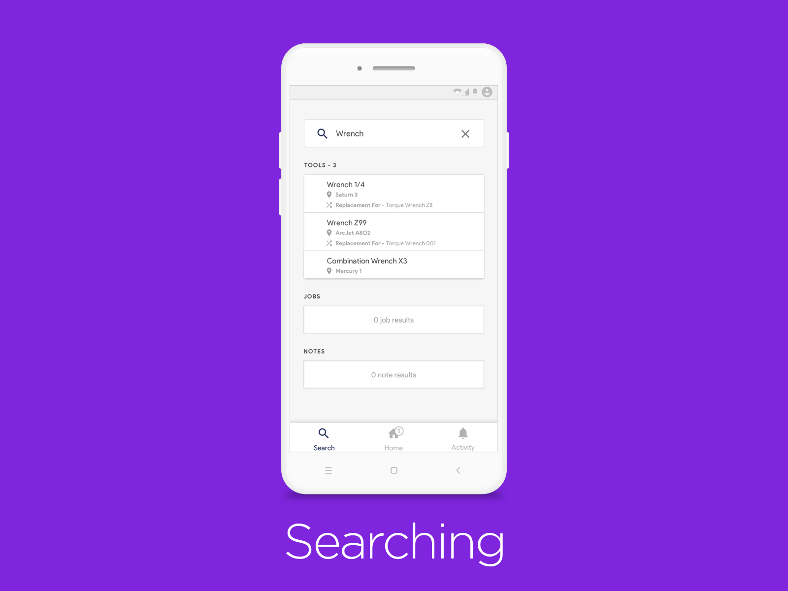
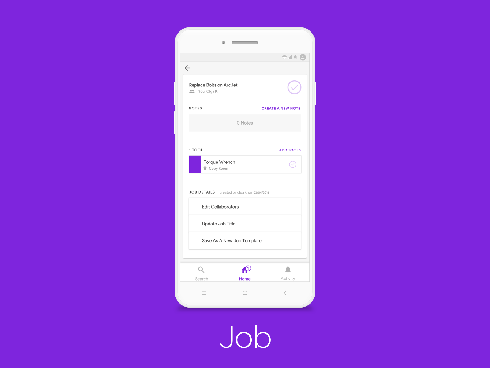
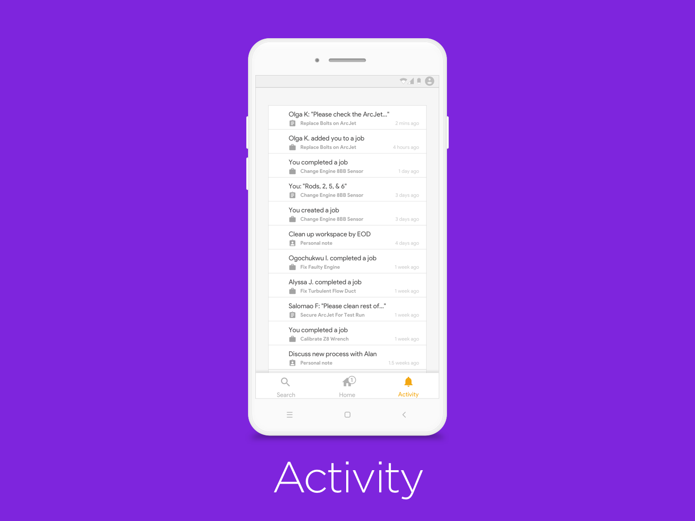
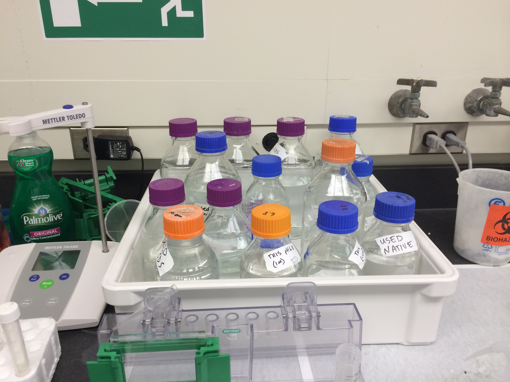
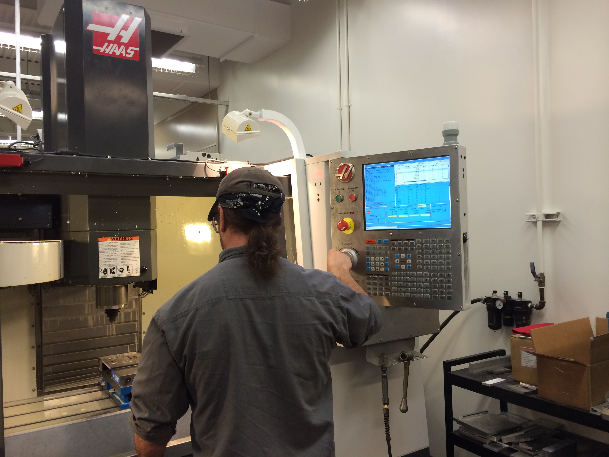
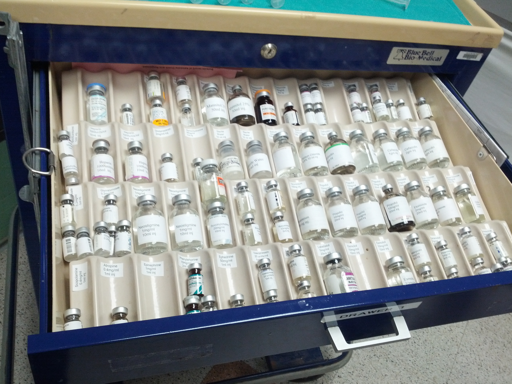
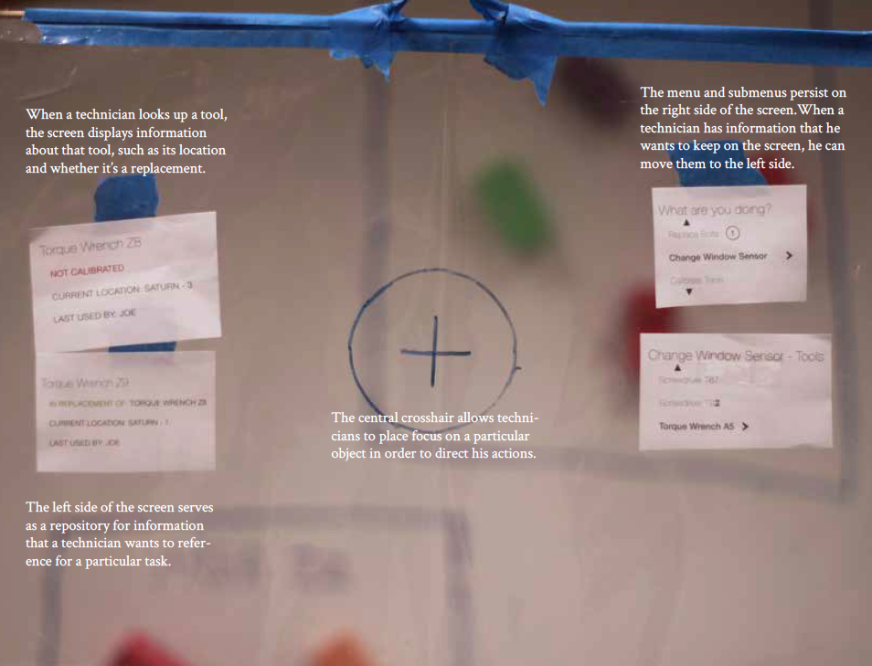
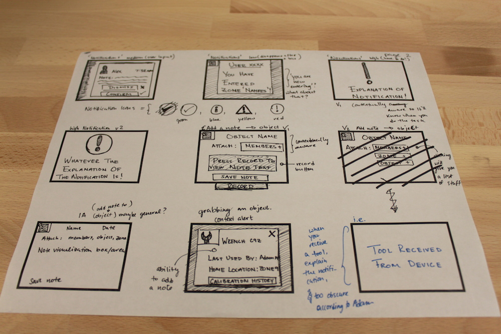
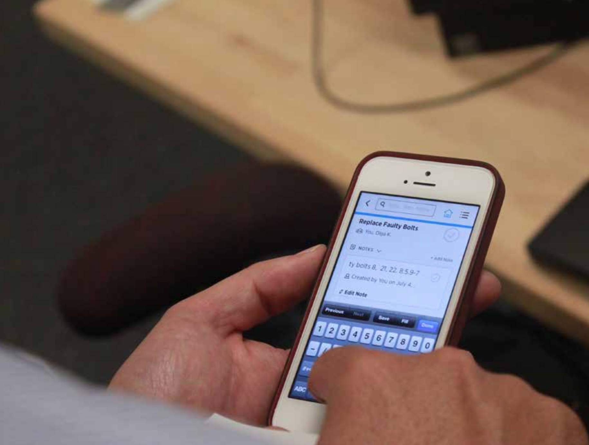

overview
Working on a hybrid Carnegie Mellon and NASA team, we built Helios. A tool that improves NASA astronauts' and engineers' ability to track and share tool information and procedure data more efficiently.
Astronauts aboard the International Space Station regularly perform experiment and maintenance procedures. They work off static procedure documents and use tools stored all over the space station. At the time, NASA personnel manually tracked the location and status of their equipment, resulting in misplaced or damaged tools, and unreliable data logs.
product
  research
  prototyping
  projects